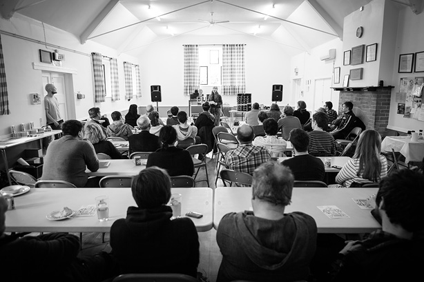

Our second If Wet of the season saw us hosting a special event in our home village hall. In fact, for various reasons, it is the only event we have planned to take place in our village hall this year.
Late last year, John Doran of The Quietus got in touch to ask about us hosting him for an event as part of his tour, to launch his new book Jolly Lad. We weren’t entirely sure how this fitted with a standard If Wet but we thought we’d go for it; in part to just keep bringing exciting stuff to Callow End.
As John intended to perform readings from his book, accompanied by music from Arabrot, we decided the emphasis would be more on performance than usual at an If Wet. We also decided to try and find a selection of artists for whom storytelling was central to their work. The wonderful Sarah Angliss immediately sprang to mind but we wanted to have two further artists to accompany John and Arabrot. David and I chatted and he reminded me of Josephine Dickinson, who we had met when running If Wet at Bardsea Malt Kiln last year. I got in touch with her, and her enthusiasm to be involved was palpable…so that was our line-up sorted!
Tickets sold well and we were delighted to have a great turnout on the day as well; The hall was as full as it has ever been for an If Wet. We started by setting the scene and briefly demonstrating the headset for our latest project Amplification, before handing over to Josephine for her delightful talk, which covered studying under the tutelage of Michael Finnissy and going mushroom picking with John Cage.



Next up we had Sarah Angliss, who was a delight to behold, as ever.


Lastly it was over to John Doran and Arabrot. John read from his book; Arabrot created ambient soundscapes in accompaniment. Wonderful stuff!


Thank you to our artists and to all who attended for making this such a wonderful experience! Callow End Village Hall has never witnessed anything quite like that…
Many thanks to George Benson for the wonderful photographs!